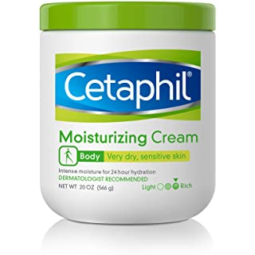
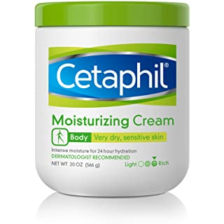
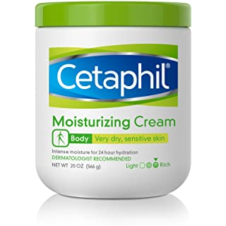
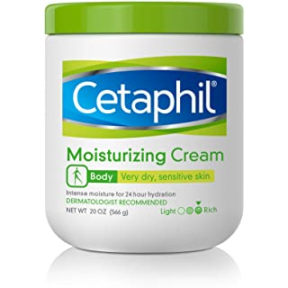

Price:$14.24
Stock Availability:In stock
Distcription:ETAPHIL Advanced Relief Lotion is formulated with nine moisturizing ingredients, including shea butter and vitamins E and B5, to replenish and restore continuously dry skin. This rich lotion immediately improves skin’s texture and luminosity, and provides long-lasting, 48-hour relief from dryness. Use daily to help restore skin’s natural barrier in just 1 week. This formula is hypoallergenic, noncomedogenic (so it won’t clog pores), fragrance free, paraben free and clinically proven to be gentle on all skin tones and types.
| Weight | Dimension(LxWxH) | Manufacture | 16 Ounce | 6x5x4 Inches | Galderma Laboratories |
|---|